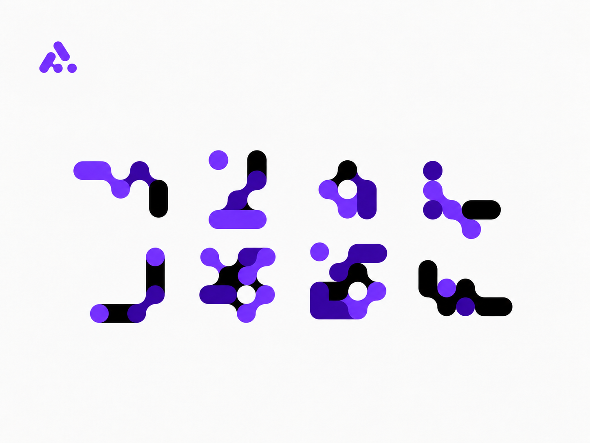

하이마트 온라인 전체 구매여정
처음부터 재설계했습니다.
LOTTE HIMART 2024 -
LOTTE HIMART 2024 -
LOTTE HIMART 2024.07—NOW
LOTTE HIMART 2024.07—NOW
LOTTE HIMART 2024.07—NOW

AIMMO 2022-2024
AIMMO 2022-2024

TRENBE 2021—2022
YANOLJA 2020-2021
NBT 2017.08—2020.03